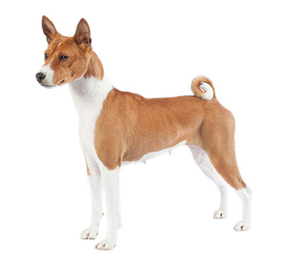

Rase de caini
Akita japonez

Origine
Rasa de câini Akita este cea mai mare dintre toate rasele japoneze și a fost crescută inițial în provincia Akita la 1600. Unii cred că acești câini au fost crescuți inițial pentru a vâna mistreți sălbatici, căprioare și urși negri; alții cred că au fost crescuți pentru luptele de câini. Cu toate acestea, atunci când luptele de câini ca sport au pierdut teren în Japonia (și în Europa), câinii au fost apoi folosiți la vânătoare. La sfârșitul secolului al XIX-lea au fost importate alte rase, ceea ce a făcut ca rasele japoneze să piardă din popularitate. Societatea de Conservare a Câinilor Japonezi a fost înființată atunci în scopul consevării raselor native, care au fost toate declarate monumente naționale.
Personalitate
Sunt câini puternici – la trup și la minte – și nu sunt recomandați pentru stăpâni începători. Trebuie să fie manevrați de persoane experimentate și au nevoie de socializare timpurie și continuă și de dresaj. Sunt, totuși, foarte loiali propriilor lor familii. Curajoși, ei sunt niște buni câini de pază fără să latre prea mult. Instinctele lor de vânătoare sunt puternice și nu trebuie să uitați niciodată acest lucru.
Sanatate
Ca multe alte rase, Akita Japonez poate suferi de boli ereditare ale ochilor și displazie de șold (o afecțiune care poate duce la probleme de mobilitate). De aceea verificarea ochilor și evaluarea șoldurilor câinilor înainte de împerechere sunt importante.
Exercitii
Akita are nevoie de multă mișcare pentru a le menține musculatura în formă. Acestea fiind spuse, dacă totuși trebuie să săriți peste o plimbare într-una din zile ei vor accepta acest lucru fără să vă facă probleme. Amintiți-vă că sunt câini de vânătoare și că trebuie să aveți mare grijă atunci când le permiteți să alerge liberi.
Nutritie
Câinii de talie mare, în afară de faptul că au un apetit mare, beneficiază de o balanță diferită de nutrienți, care include minerale și vitamine, comparativ cu câinii de talie mai mică. Akita Japonez este predispus la balonare și probleme stomacale; mesele mai mici și mai frecvente pot ajuta la reducerea acestui risc.
Ingrijire
Blana trebuie îngrijită bine de două sau trei ori pe săptămână pentru a o menține în cea mai bună stare, și de două ori pe an, în timpul năpârlirii abundente, se va folosi un pieptene metalic cu două rânduri de dinți.
Basenji
Origine
Rasa Basenji a fost probabil creată pentru compania faraonilor, având în vedere că există portrete ale câinilor Basenji în piramidele egiptene. În timp, rasa a coborât către Africa Centrală unde era folosită pentru a ucide șobolanii cu dinți lungi și șobolanii de stuf din regiunea Congo. Acești șobolani mari și agresivi reprezentau un pericol real pentru vitele oamenilor din regiune, astfel încât un câine de vânătoare solid era esențial. Rasa a rămas necunoscută lumii occidentale până în perioada Victoriană, când primii exploratori în Africa au remarcat un „câine care nu latră”.
Personalitate
Unicitatea acestor câini constă în faptul că nu latră – dar scot un sunet asemănător unui urlet când sunt agitați! Alerți, independenți, inteligenți, asigurându-și propria îngrijire și aproape lipsiți de mirosuri, câinii din rasa Basenji seamănă mult cu pisicile și sunt cunoscuți pentru faptul că se cațără în copaci și pe garduri! Afectuoși cu cei apropiați, aceștia sunt de obicei rezervați cu străinii. Câinii Basenji tind să intre în conflict cu alți câini, astfel încât socializarea timpurie este imperativă.
Sanatate
Cele mai frecvente boli moștenite și recunoscute la scară largă pentru Basenji sunt un tip de boală a rinichilor (Sindromul Fanconi) și o formă de anemie. Pentru ambele boli sunt disponibile teste genetice. Similar altor rase, pot apărea boli de ochi ereditare. Testarea ochilor și testarea genetică a câinilor înainte de împerechere sunt așadar foarte importante.
Exercitii
Creați pentru a vâna pe teren accidentat, câinii Basenji au nevoie de minim o oră de mișcare pe zi, putând rezista chiar la mai mult de atât, în funcție de posibilitățile tale. Deși nu sunt ușor de dresat, implicarea câinilor Basenji în diverse sporturi pentru câini pentru a le păstra sănătatea mentală și fizică ar putea fi benefică. Au mai multe dificultăți în a simți drumul decât alte rase, astfel încât trebuie să fii mult mai atent dacă îi antrenezi în apropierea traficului.
Nutritie
Câinii de talie mică au un metabolism rapid, ceea ce înseamnă că ard caloriile foarte repede, deși stomacul lor mic le impune să mănânce puțin și des. Mâncărurile pentru rasele mici sunt create special pentru a conține nivelurile adecvate de nutrienți cheie și au dimensiuni mai mici ale bolului alimentar pentru a se potrivi gurii lor mici. Aceasta încurajează de asemenea mestecatul și îmbunătățește digestia.
Ingrijire
Câinii din rasa Basenji se ocupă singuri de îngrijirea și toaleta lor. Blana este scurtă, lucioasă și fină și poate fi ștearsă cu o mănușă o dată pe săptămână pentru a îndepărta firele desprinse. Urechile și nasul pot fi verificate periodic. Altfel nu este nevoie de prea multă îngrijire suplimentară.
Note
| Akita japonez | Basenji | |
|---|---|---|
| Origine | ||
| Personalitate | ||
| Sanatate | ||
| Exercitii | ||
| Nutritie | ||
| Ingrijire |